by Inncretech
In this HR analytics problem, we try to understand what causes the employees of a big company to leave prematurely, and come up with predictive models that predict which employees will leave next. With the help of actionable insights and accurate predictions, companies can take steps to ensure that their talent is happy and engaged and can rethink their retention strategies to keep employees from leaving.
Lets first explore this dataset. In our dataset we have the records of approximately 15,000 employees with information on attributes such as “Satisfaction Level”, “Salary”, “Department”, and “Average Monthly Hours”, to name a few. The variable “left” is a binary variable that tells us if an employee has quit or is still working for the company, and is the variable that we’re interested in predicting.
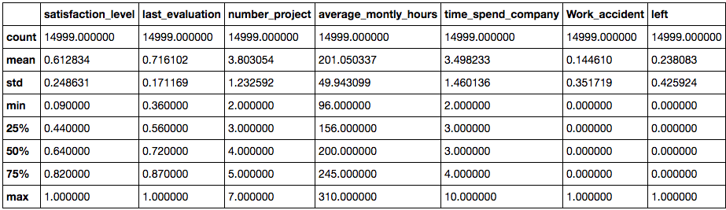On looking at high level stats of our dataset, we can see that the median satisfaction level is about 61% and on average employees work for up to 200 hours a month. We plot a simple bar graph to see how the employees are distributed across the different departments of the company. There are over 4000 employees belonging to the sales department and they constitute the majority in the workforce.
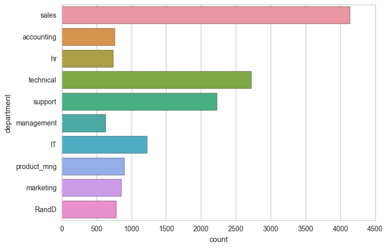What are the average monthly hours for different salary groups? Lets find out by comparing the employees who have left with those who haven't. From the plot below we can see that the mean average monthly hour is 200 hours and is almost consistent across all groups. Former employees with low and medium salaries seem to have put in slightly more hours a month than everyone else and former employees with high salaries worked slightly less hours.
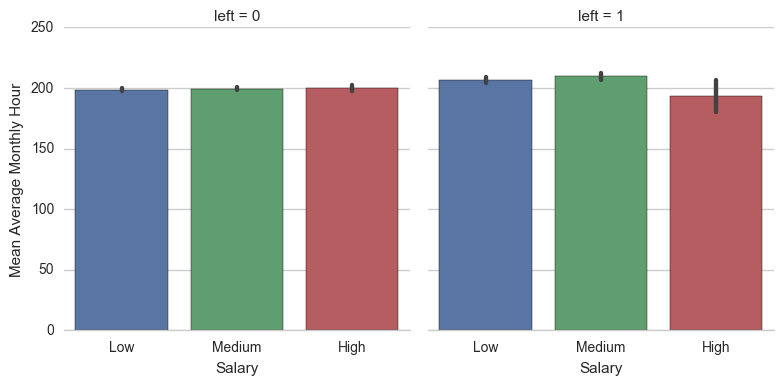What scores do employees get on their performance reviews? Is it the same across the different salary groups? The plot below answers these questions for us. We can see that the employees of different salary groups who've stayed have similar average performance scores and they're all well above 70%. Its interesting to note that the Low and Medium salaried employees who've left held an average performance score above 70%, but the scores of High salaried employees fall well below 70%.
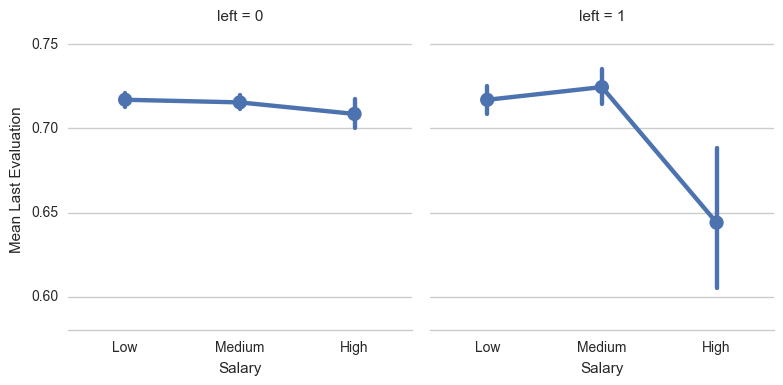We wish to find out if satisfaction level plays a role in employees leaving their companies. Let’s find out what the distribution looks like in this dataset. It appears that the employees who left reported lower average satisfaction levels, ranging from a little over 0.37 to 0.46. Employees who stayed reported relatively higher satisfaction levels. From this observation we can say that job satisfaction level plays an important role in deciding the future of a person in a company.
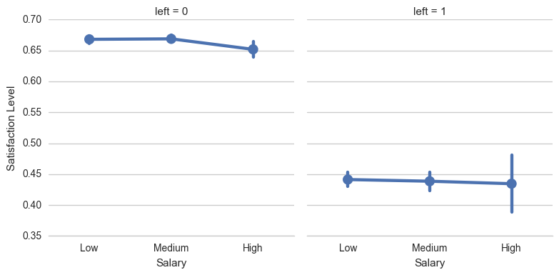Does the satisfaction level of the employees depend on how many projects they've been assigned to in a year? As it turns out, it does. It appears that the people who are most satisfied with their jobs are assigned around 2 to 4 projects a year, and this satisfaction level is almost consistent across different salary groups. Employees who are assigned to just 1 or even more than 4 projects have relatively lower satisfaction levels.
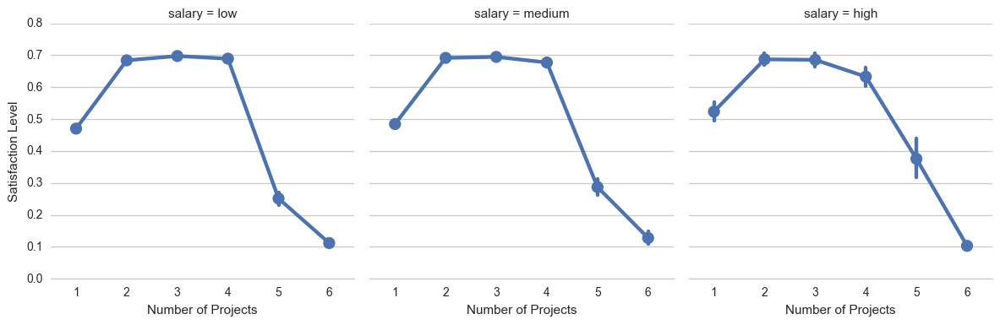
Using python's scikit-learn library, we developed supervised classification models in four different algorithms to predict whether a given employee will or won't leave the company.
The plot below shows us how the class label "left" is distributed. We see that the vast majority of data points belong to class 0, the label which represents the employees who have not left the company. The remaining belong to class 1, the label which indicates that they have left.
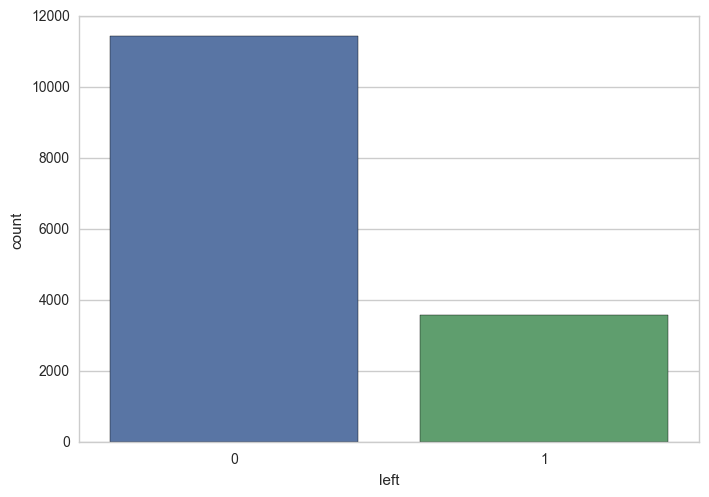Since the dataset is imbalanced and skewed towards class 0, we used stratified sampling to construct our training and test data sets. Stratified sampling ensures that the percentage of both the classes remains consistent across the training and test sets.
We began by applying the Random Forests algorithm, which works by building several decision trees and averaging their results. Apart from being highly interpretable, Decision Tree based modelling techniques also help us in understanding how important the features of a dataset are.
Our Random Forests model reported that the feature "satisfaction_level" plays the most important role in determining the class of a tuple. The importance of a feature is computed as the (normalized) total reduction of the criterion brought by that feature. It is also known as the Gini importance. The processing times and accuracy scores are shown below.
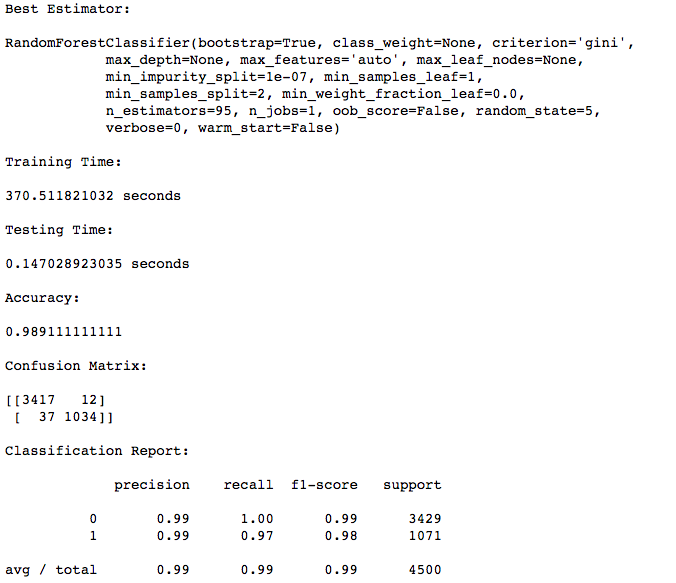In the plot below we see several features that are of really low importance. We dropped the features with relatively lower scores, generated new train/test sets, and retrained the RF model to see if there were any changes in the accuracy.
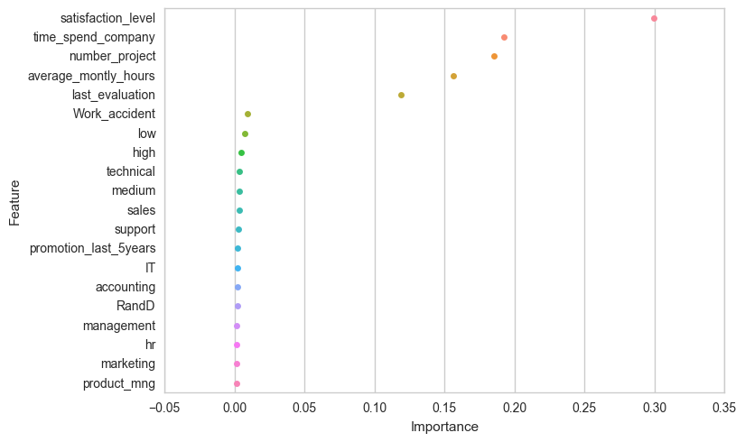We can see that the importance scores of the features in the reduced dataset haven't changed much.
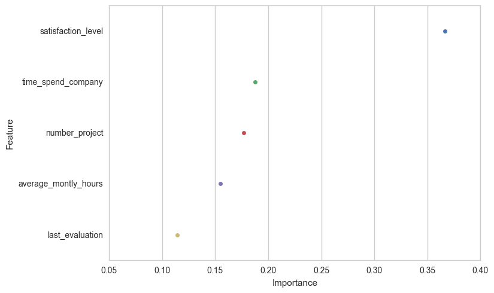We can see that reducing the number of features hasn't affected the overall scores. Although the model takes quite a while to train, it produces pretty impressive class precision and recall scores.
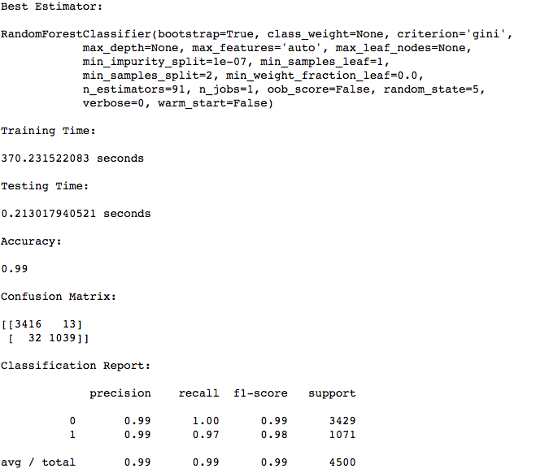Lets take a look at what the ROC curve looks like for our Random Forests model. The ROC curve is a plot of the False Positive Rate vs the True Positive Rate of a binary classifier. AUC, which stands for Area Under the Curve, tells us what the value of the area under the curve is. The closer AUC is to 1.0, the better our model is at performing classifications.
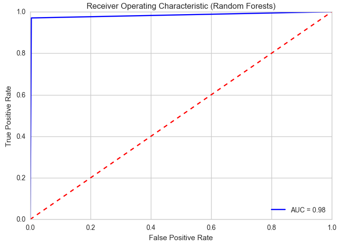With the dataset consisting of reduced number of features, we developed prediction models using SVM, K Nearest Neighbors, and a standard Decision Tree. Lets visualise the ROC curves of all our models together to find out which one performed the best. From the plot below we can see that all the models performed well, but the Random Forests model performed the best, with an AUC score of 0.98.
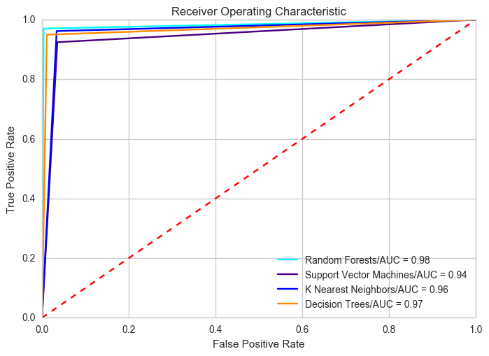
Based on our analysis, we report that the Random Forests model outperformed all the other models in terms of predictive accuracy and AUC score. It is a model that is built based on the technique of ensemble learning, where several base estimators are built independently and their predictions are averaged. This helps reduce the variance and improves the generalizability and robustness over a single estimator.
Furthermore, we obtain an importance score for each of the features used in the classification process which will help in interpreting the model's results. In our case, the model gave a lot of weight to Satisfaction Level, Time Spent at the Company, and Number of Projects. These attributes are quite obvious and therefore we feel confident in the predictions of this model.